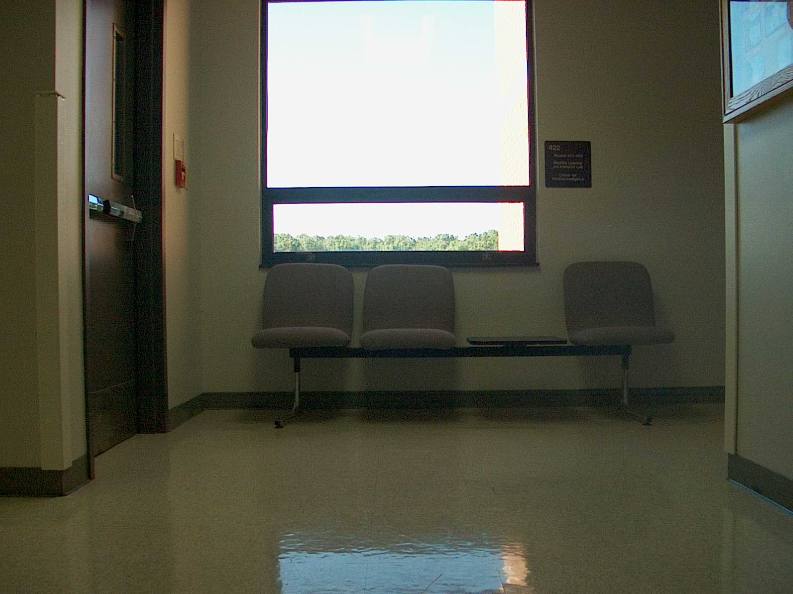

Report Canny:
For Canny I choose different thresholds for all five of the images.For the first image I choose 130 for the minVal.This eliminates the edges that are below this value. For the max val i choose 200. Which means that if you are above the maxVal you are considered a sure edge. If you are in the inbetween minVal and maxVal and the value is not connected to a sure edge it will be discarded.For many of the images it was hard to capture all the edges without losing some edges. If you try to capture all of the edges there will be a lot of noise in the picture.This becomes a problem when applying Hough Line transformation.
For the other image I choose 90 for min Val and 150 for max val in order to capture the seats as best as I could. The main problem is that by capturing the seats a lot of noise was captured also.
For the third picture I choose a higher max value of 200 to get rid of some of the lines it was detecting that I did not considered to be valid.This photo came out better than the other photos. As you can see the tree outside the window was also caputered
For the fourth picture I choose a lower min Val of 70 in order to get rid of some noise.I used the same max value.
For the last picture I choose the same values for the third image. This allowed me to capture the border of the windows and even the bottom border of the flooring. Unfortunately there is still some noise on the right side of the image due to shadows and other features.
Report Standard Hough:
For the hough transformation I choose a p value of 1 and a theta value of pi/180. These values ensure that almost all pixels are checked for possible lines. For the first image I choose a threshold of 145 which means that is the minimum vote to be considered a line. This gave a decent amount of lines.
For the other images I choose values above 200 in order to capture not too many lines. With a low threshold hough transformation finds many lines that should not be considered lines.
Report Probabilistic Hough:
For the probabilistic transformation the thresholds were all very low compared to the standard.For the first image I used a threshold of 10.To try to capture all the possible lines generated.I choose a minLinelength of 50 to prevent from short lines being detected. I also choose a maxLineGap of 30 which will consider lines close together as the same line. These settings hold true for image2 but I used a higher threshold because I was getting too many lines.For the other images I used a low threshold that was generally less than 10 ,low minLineLength and maxLineGap.
Conclusion:
For the Standard Hough Transformation, I generally noticed that higher thresholds are needed otherwise too many lines will be detected.For the Probabilistic Hough Transformation thresholds should be generally low. I had a tough time being able to detect all the lines using the probabilistic transformation.One of the main problems is to detect edges with Canny without getting noise. This affects the entire process of Hough transformation since we are using it to aid in the detection of lines.
Original Images: 